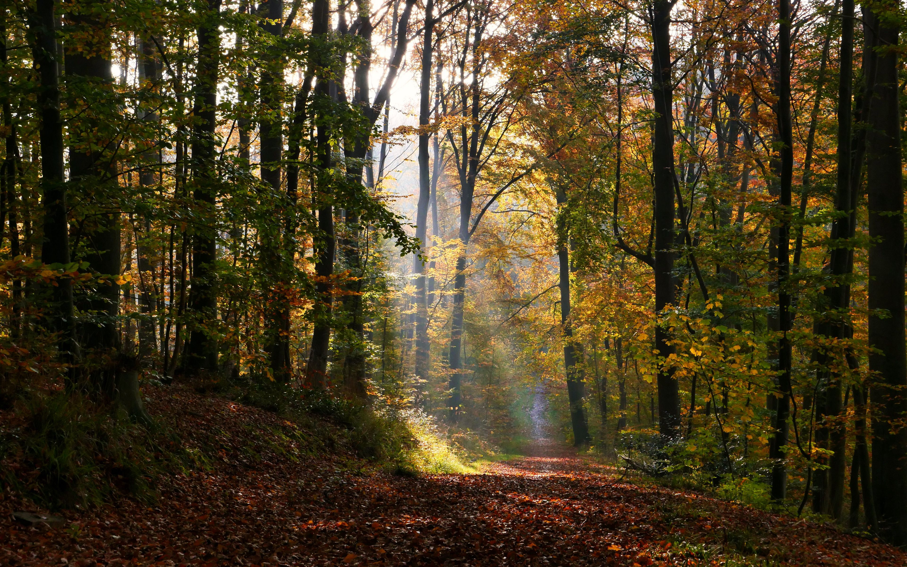

Decides seguir confiando. El cuervo no te trajo hasta aquí solo para mostrarte una madriguera. Hay algo más, lo sentís en tus huesos.
El cuervo parece entender tu decisión. Grazna con lo que casi suena como aprobación y emprende vuelo nuevamente. Esta vez vuela más rápido, más decidido, como si supiera que ahora sí vas a seguirlo hasta el final.
Caminás durante casi una hora. Tu cuerpo está al límite, pero algo dentro de vos te dice que sigan adelante. El bosque cambia gradualmente - los árboles son más viejos, más grandes, y hay más vida aquí.
Finalmente, el cuervo se detiene. Llegaste a un valle escondido que parece intocado por el tiempo. Hay un arroyo cristalino, árboles frutales, y pequeñas cuevas naturales perfectas para vivir.
Pero no estás solo. Hay otros zorros aquí, una pequeña comunidad. Te miran con curiosidad pero sin hostilidad.
Acercarte con confianza - el cuervo te trajo aquí por una razón
Quedarte en las sombras observando - necesitás entender primero